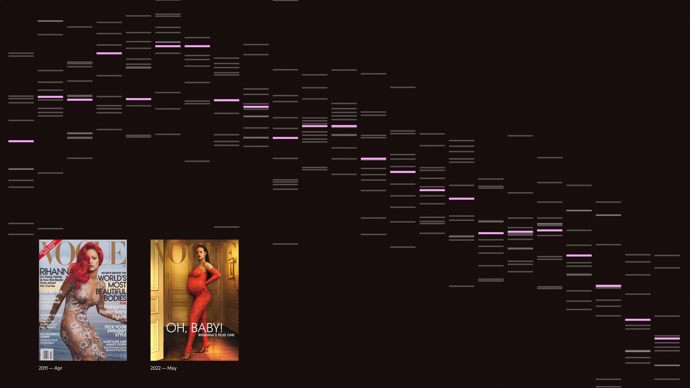
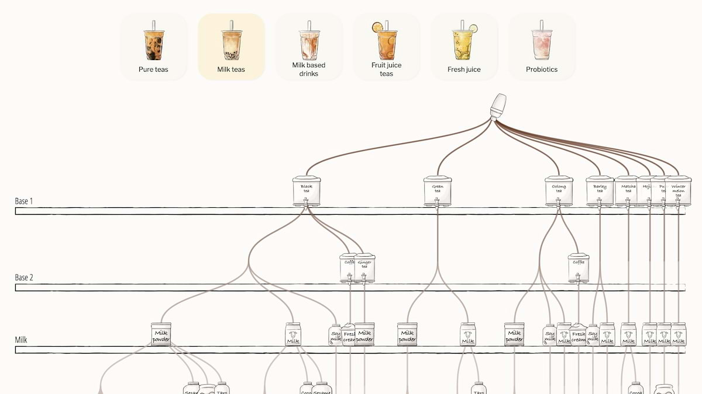
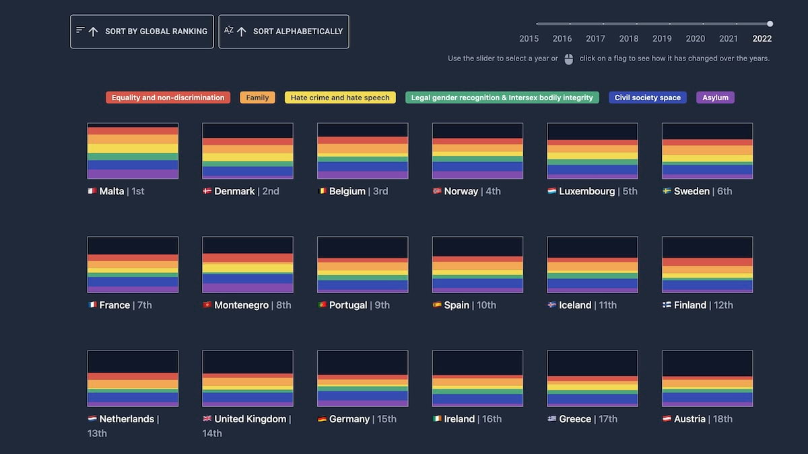
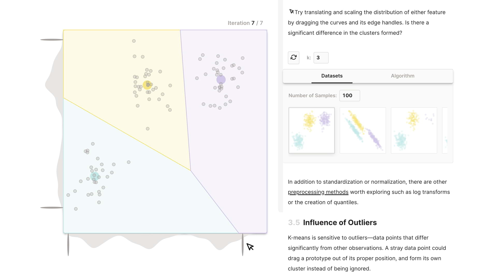

The Pudding Cup
The best visual and data-driven stories of 2023
We’re excited to announce the winners of our seventh-annual Pudding Cup! Each will receive $1,500 for their hard work.
The 2023 winners
Since When Does Vogue Hate Text?
I don't read Vogue. I don't remember the last time I even looked at a cover to be honest. Yet, I was instantly captivated by the story. From the jump, the premise and approach were clear and concise. All of the charts presented the right amount of information and stepped through at a very accessible pace. It felt like the author was sharing their journey as they discovered this trend. I knew it was a good piece when I was in the grocery store the next day evaluating the covers on the stand in the checkout aisle. It selfishly left me wanting a tiny bit more; what do the Vogue designers have to say about it, and did other competing magazines follow a similar trend? Maybe a part two is in order... —Russell Samora
Pavement 1933–2023
![a dot plot of the setlist from every pavement show in the last 2 years. each dot represents a song. the songs are stacked ontop of each other from the opener on top to the closer or last song on the bottom. the shows are displayed horizontally. the songs in the base set are colored yellow, the songs in the encore are blue, and the closing songs are green. the dots corrsponding to the song "stereo" are connected with a line. out of 77 shows, it has mostly been played int he base set, and only played 8 times in the encore.](assets/project-imgs/pavement.jpg)
If there’s one thing I love, it’s a data story that manages to take a niche interest (or, according to the author, “an obsession at best” - I know that life well) and turn it into a universally interesting narrative. It is awesome how this piece seamlessly intertwined personal anecdotes of seeing Pavement a bagillion times, data about the band’s reunion tours in general, and viz into an experience that relayed both the history and the chaos (66 songs and 77 shows?!). But, notably, the precise data work that went into parsing decades of setlists and an equally massive discography was seriously impressive - and it was all layered with a design that matched the tone of the project, too. 11/10. —Caitlyn Ralph
See past winners from
The 2022 winners
All the Ways to Make Bubble Tea, Taiwan's Pearl-fect Drink
This piece took a simple question – how many unique bubble tea drinks are there in Taiwan? – and executed it delightfully. There’s so much information, but the illustrations and the personalized framing help you easily traverse it all. I am boba-obsessed, but I tend to stick with the same thing (jasmine milk tea, 50% sweet, light ice, boba), and this piece inspired me to try something new next time. —Michelle McGhee
Flags of Inequality
The subject matter and the design collide with so much thoughtfulness and intention in this piece on LGBTQ+ rights in Europe. I keep looking at the rectangles and being amazed that those simple shapes hold so much meaning: the connection to the queer community, how each stripe is a building block for complete representation, and how the absence of color equals the absence of rights. The big idea behind this piece is so well done, but it’s also packed with so many small details — like how the flags reshuffle — that make the user experience more engaging. I like to consider myself a bit of a connoisseur of queer data projects, and this one is going to stay with me for a long time. —Jan Diehm
K-Means Clustering: An Explorable Explainer
I enjoyed everything about this explainer. I know a technical explainer is only meant for a specific audience, but it was done in a gentle and inviting way. It was clear that every piece of it was thoughtfully considered. The prose was both clear and approachable, the design was simple and clean, and the interactions were playful. There was also a nice balance of passive and active user experience. I appreciated the subtle additions, like toggling to the algorithm view, or dragging the edge handles for deeper control. All-in-all, it was a winner for me because it was able to teach me something in a pleasantly engaging way. — Russell Samora